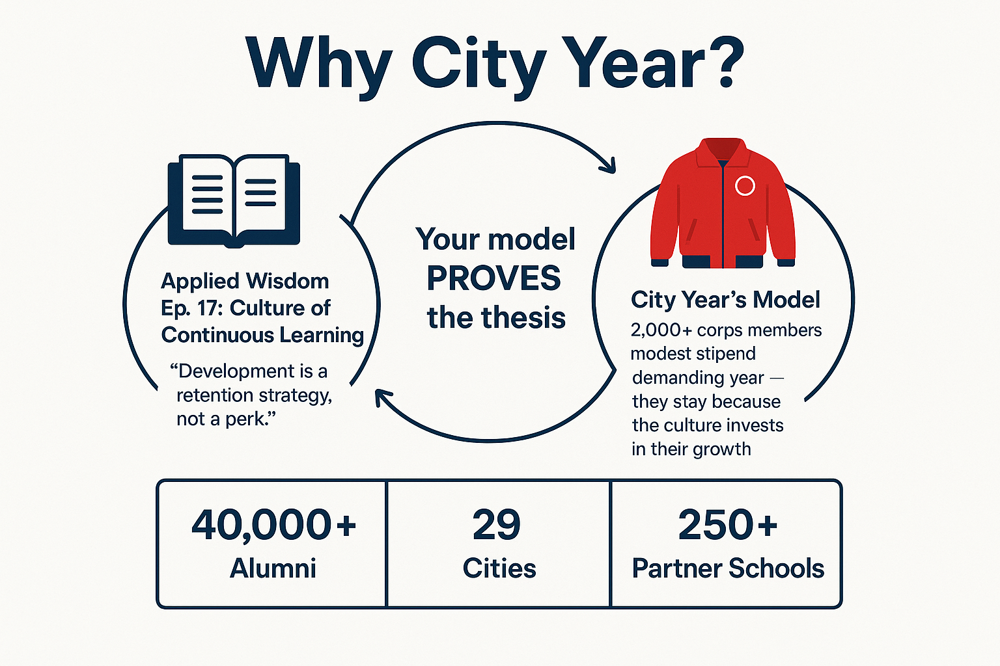
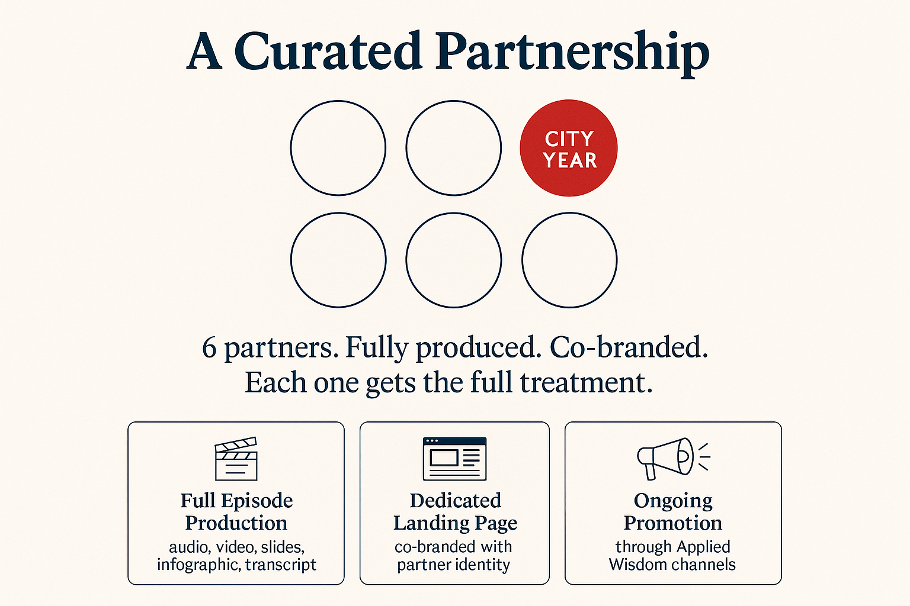
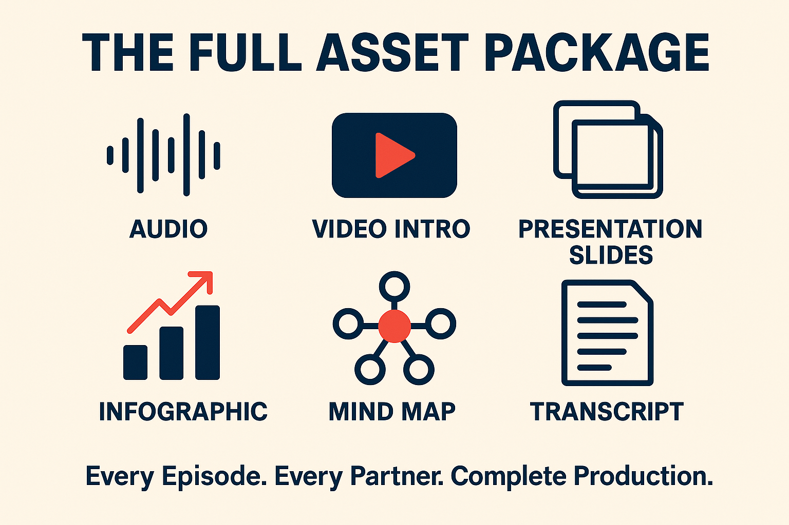
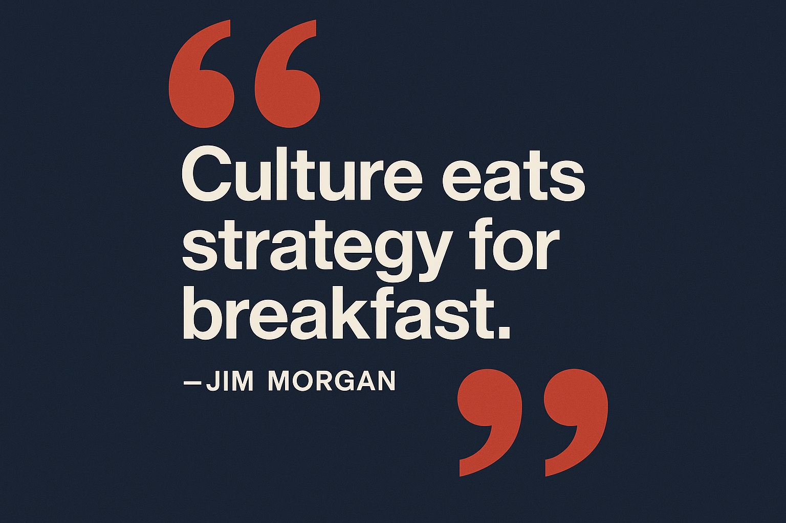

A co-branded podcast partnership conversation
Applied Wisdom for Nonprofits: Co-Branded Podcast Program







Walk through how this creates value across City Year's entire ecosystem: the organization, leadership, corps members, and alumni network, then anchor it in the Episode 17 experience and the broader 66-episode series.


If it's a fit: logo files, confirm the episode concept, timeline to publish.
Two versions: where we started and where we are now.
Everything Jim Morgan distilled into one free resource for nonprofit leaders.